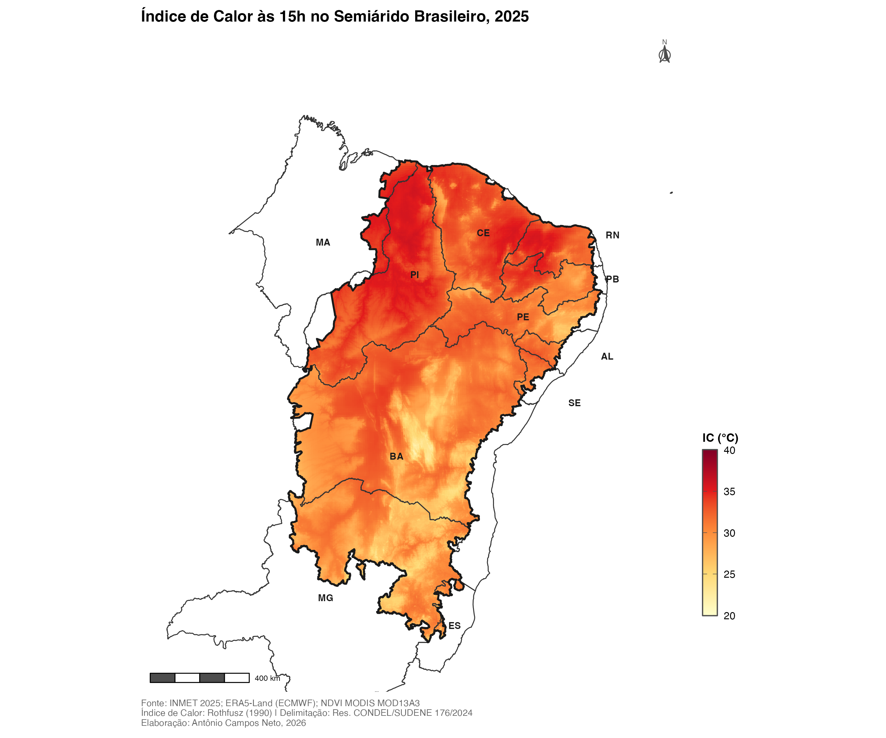
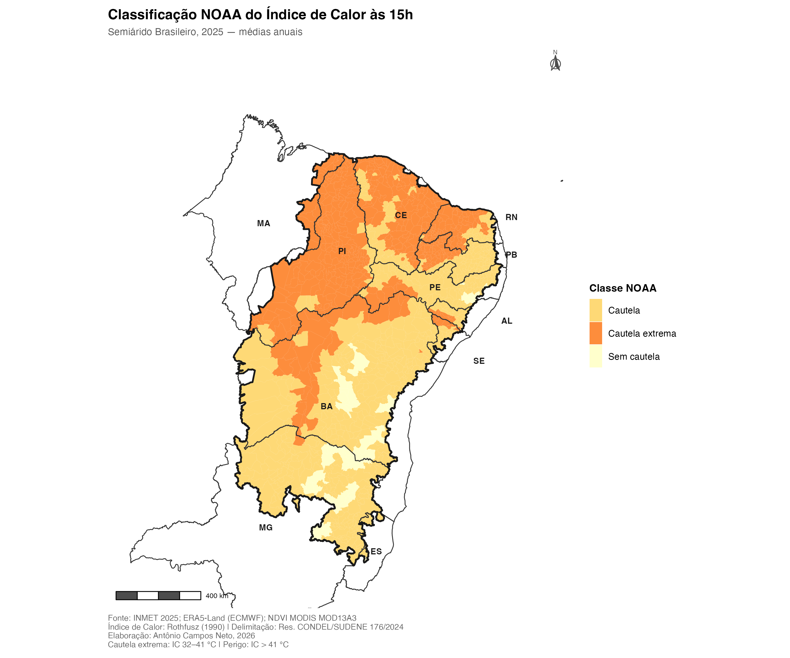
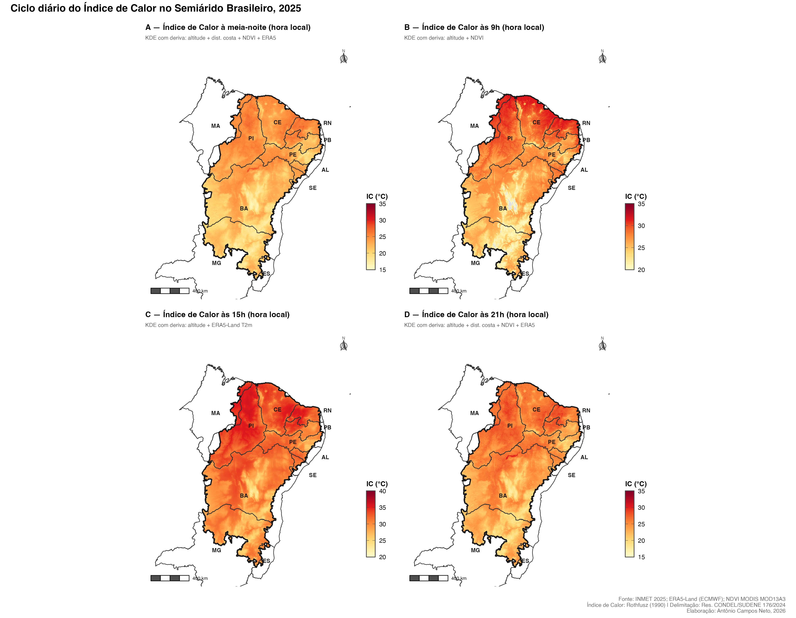

R package
1,477 municipalities · 4 synoptic hours · ~1 km resolution · EPSG:5880
Spatially interpolated Heat Index (Rothfusz 1990) rasters for the official Brazilian Semiarid region (CONDEL/SUDENE Res. 176/2024). Produced with kriging with external drift, validated against 59–73 INMET stations via leave-one-out cross-validation. R² = 0.884 at 15h.
The data
Annual mean Heat Index for 2025, mapped at ~1 km resolution across all 1,477 municipalities of Brazil's official Semiarid region. Four synoptic hours reveal contrasting thermal patterns driven by altitude, ERA5 forcing, and Caatinga land-surface processes.

Annual mean Heat Index at 15h (local time) · KDE with external drift: altitude + ERA5-Land T2m · INMET 2025 · EPSG:5880

NOAA Heat Index classification at 15h · 640 municipalities under extreme caution (IC 32–41°C) · 13.3 million people

Daily cycle: 00h (midnight) · 09h · 15h · 21h local time · Covariates vary by hour (NDVI at night, ERA5 at 15h)
Population exposure
At 15h, annual mean Heat Index classifies 96.8% of the Semiarid population under NOAA caution or extreme caution — based on 2022 IBGE Census. Annual means are a conservative lower bound: daily peaks in specific months can exceed IC > 41°C.
Why trust the raster?
15 spatial interpolation methods were compared across all four synoptic hours via leave-one-out cross-validation (LOOCV). The winning method — kriging with external drift (KDE) — selects covariates per hour based on physical justification, not statistical convenience.
Get started
Municipality names follow IBGE convention: uppercase without accents. Use hi_search() to find the correct name (e.g. MOSSORO, not Mossoró).